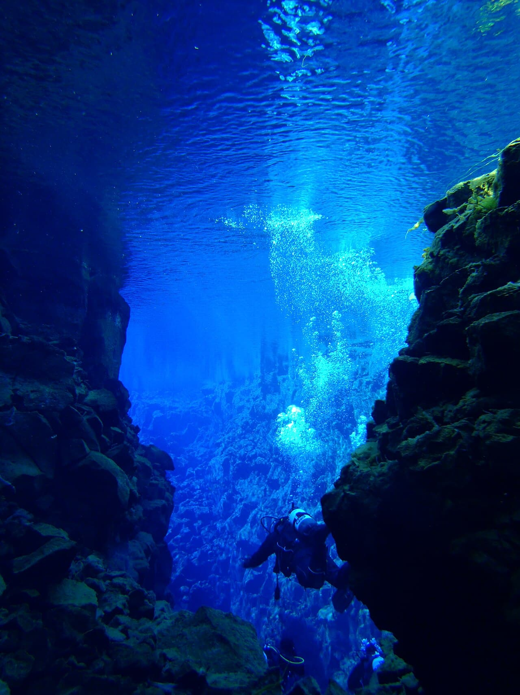

Faille de Silfra
Þingvellir, Islande · plongée, snorkeling

Plongée entre les plaques tectoniques Amérique–Europe, dans une eau de source à la visibilité de plus de 100 m.
- Lieu
- Þingvellir, Islande
- Niveau
- Intermédiaire
- Activités
- plongée, snorkeling
- Type d'eau
- inland
- Coordonnées
- 64.25, -21.12 (position approximative du secteur)
Dangers à connaître
- Eau glaciale : combinaison étanche obligatoire.
- Encadrement spécialisé requis.
Le conseil d'Ocean Buddy
Brevet drysuit nécessaire ; accompagnement obligatoire.
Ouvrir dans Ocean Buddy Télécharger sur l'App Store
Source : Description historique Ocean Buddy · vérification externe en attente.